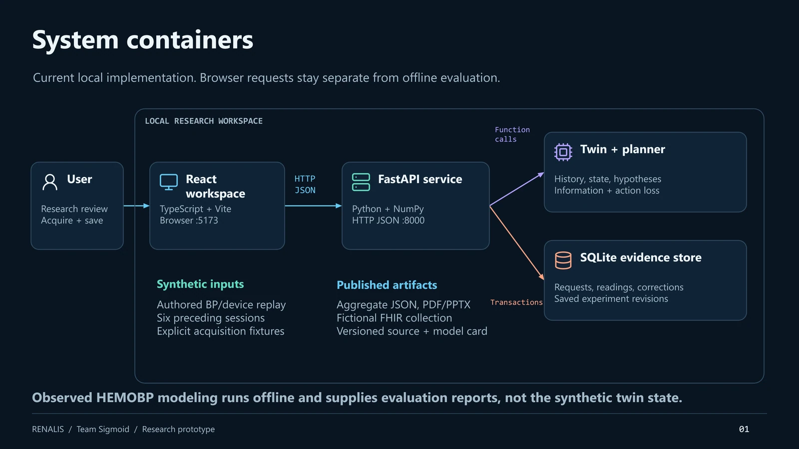

The Happiest Health Digital Twin Challenge asked teams to build a proof-of-concept digital twin that predicts one specific, localized adverse health outcome for one chronic condition, by fusing two data streams, and to present it through a doctor-facing interface:
— From the official challenge brief
| Required by the brief | What RENALIS delivers |
|---|---|
| One chronic/lifestyle condition, one localized adverse outcome | Chronic kidney disease on maintenance hemodialysis → intradialytic hypotension (systolic BP ≤90 mmHg within 30 minutes). Not one of the brief's three example conditions (diabetes, hypertension, cardiovascular risk) — a deliberately chosen fourth, equally prevalent one. |
| Static/historical EHR stream | A learned per-patient fluid-refill prior fitted from six preceding synthetic dialysis sessions, shrunk toward a population reference. |
| Dynamic/real-time device stream | Per-minute synthetic BP-cuff readings + live ultrafiltration (fluid-removal) machine settings, replayed minute by minute. |
| A working algorithmic model that predicts the event | A 192-particle Bayesian fluid-compartment filter, plus a second four-hypothesis "Mechanism lab" that also decides what to measure next. |
| A conceptual doctor-facing UI dashboard | A full browser research workspace — not a mockup — with six linked stages: Learn, Understand, Compare, Ask, Review, Verify. |
| Synthetic / open-source data only (DPDP / HIPAA sandbox) | Four fictional, seeded synthetic patients for the live demo; the public HEMOBP dataset (CC BY 4.0) for a separate, honestly-reported retrospective benchmark. |
| GitHub repo, license, video, architecture + presentation PDF/PPT | All published: public MIT-licensed repo, 20-minute unlisted demo, architecture & presentation decks in PDF and editable PPTX. |
During dialysis, a patient's blood pressure can fall for several different physiological reasons: the body can't pull fluid back into circulation fast enough, the blood vessels stop compensating, or the heart's output drops. A single BP trace is often compatible with more than one of these. Most prediction systems quietly pick one story and move on. RENALIS refuses to.
Instead, it keeps four competing explanations alive simultaneously — each represented as a cloud of weighted particles — and treats the real question as a second-order one: given what we know right now, which additional, feasible measurement would most help tell these explanations apart? That's the actual research contribution: adaptive, sequential measurement selection driven by expected information gain, computed separately from whether that measurement would even change what a clinician would do (decision value).
192-particle Bayesian fluid-compartment filter. Fuses the learned historical prior with available BP and machine readings to estimate current plasma/tissue volume and forecast a localized BP outcome.
Four physiological hypothesis families × 48 particles each. Scores every feasible next measurement (repeat BP, relative blood volume, cardiac output) by how much it would narrow the disagreement — and separately, by how much it would change the decision.
Patient Meera (RNL-014), minute 90. After a cardiac-output reading of 3.74 L/min, support splits almost evenly — 51.7% cardiac, 46.2% volume/refill. The planner picks relative blood volume as the next measurement, because the two surviving hypotheses predict different results for it (medians 83.9% vs 87.8% of starting volume). The acquired reading, 85.0%, shifts support to 66.9% volume/refill vs 31.8% cardiac — informative, but still not fully resolved. The system says so, instead of forcing an answer.

React, TypeScript, Vite, Recharts. A six-stage evidence-journey workspace plus a public landing/research site.
FastAPI + NumPy. One Python service hosts both particle-filter engines and the adaptive-measurement scorer.
SQLite. Every acquisition, failure, and correction is appended, never overwritten — an auditable research log, not a mutable form.
A fourth, entirely separate pipeline (pandas + scikit-learn) runs the retrospective benchmark against the public HEMOBP dataset. It never feeds the live synthetic twin — keeping "does the product work" and "does history actually predict BP" as two honestly distinct questions.
| Stage | What a researcher can do |
|---|---|
| 01 Learn | Inspect the fitted refill prior, its source sessions and lineage digest. |
| 02 Understand | Click through estimated fluid compartments, machine settings, and the authored physiology graph. |
| 03 Compare | See all four hypothesis families, their fit error, and modeled response, side by side. |
| 04 Ask | Preview possible measurement results before acquiring anything; acquire the planner's recommended next reading. |
| 05 Review | See every acquisition, including failures and artifacts; append corrections with a reason, never silently overwrite. |
| 06 Verify | Read the retrospective and independent-policy results in place, including the negative one. |
| Layer | Implementation |
|---|---|
| Interface | React, TypeScript, Vite, Recharts, Lucide |
| API & inference | FastAPI, Python, NumPy |
| Persistence | SQLite — acquisitions, measurements, corrections, saved revisions |
| Retrospective evaluation | pandas, scikit-learn, patient-separated fit/calibration/test splits |
| Reproducibility | Pinned Python deps, npm lockfile, 50 backend unit tests, GitHub Actions CI |
A likelihood-based history learner feeds a particle state estimator (patient twin) and a second, four-family compatibility estimator (mechanism lab) with Gaussian observation likelihoods. Numerical Gauss-Hermite quadrature integrates over possible noisy measurement outcomes before any result exists — the planner never sees the synthetic device's hidden value while deciding what to recommend.
The adaptive selector ranks pair-conditional expected entropy reduction when two families retain at least 10% support, otherwise whole-bank information. Equipment availability, acquisition timing, failure probability, and already-released evidence all constrain which measurements are even candidates.
Does the pipeline behave coherently? Four fictional patients exercise time-availability guards, personalization, fluid accounting, and forecast safeguards. The generator and estimator share structure, so this is functional verification, not an accuracy claim.
Does patient history actually help predict a later real BP reading? 61,947 held-out test windows, 176 patients, zero patient overlap with training.
History's own contribution: −0.17 mmHg MAE (cluster interval [−0.23, −0.11]) — real but small. Event sensitivity 61.3%, PPV 13.5%.
Does choosing a measurement actually improve the decision? 192 frozen cases, one acquisition budget per policy. Mean regret: 0.222 for a fixed cuff policy vs 0.241 for the decision-value policy — the adaptive selector does not yet beat the naive baseline here. Disclosed, not hidden.
None of this is a hedge added for this document — it's drawn directly from the project's own model card and evaluation reports, which are shipped in the repository and surfaced inside the app itself. We think a jury evaluating technical maturity should see the failure modes, not just the demo.
Dialysis BP prediction, digital-twin integration, hemodynamic mechanism distinctions, and optimal-sampling frameworks already exist separately in the literature. RENALIS investigates their combination in one inspectable workflow: retain rival explanations → expose scenario disagreement → estimate the next useful evidence → update support → preserve an unresolved or contradicted state rather than forcing an answer. A focused review supports this as a genuine research question; it does not claim global priority.
| 01 | Done A reproducible, inspectable prototype — guarded states, persistent evidence, regression tests, CI. |
| 02 | Next Stronger retrospective evaluation: independent clock-alignment confirmation, canonical units, patient-separated calibration. |
| 03 | Needs collaborators Paired physiological and human-factors evaluation with clinical partners, under approved protocols. |
| 04 | Not established Treatment-effect and clinical-benefit claims — require a predeclared, prospective, causal study design. |
| Team | Sigmoid |
| Member | Rehaan — solo entrant, project design, development and submission |
| College / incubator | JSS University, Noida |
| GitHub | github.com/RAK2315 · github.com/RAK2315/RENALIS |
| Demo video | 20-minute unlisted walkthrough (linked from the repository README) |
| License | MIT (project code) · HEMOBP dataset retains CC BY 4.0 attribution |
It is not trying to be the best BP predictor. It is trying to show that disagreement between explanations is information — and that a research tool should be able to say "I don't know yet, but here's what would help me find out," instead of always producing a confident number.
All patients, sessions and device readings shown in this document and in the live application are synthetic and fictional, per the challenge's sandbox rules. Clinical deployment, treatment control and prospective patient benefit have not been established.